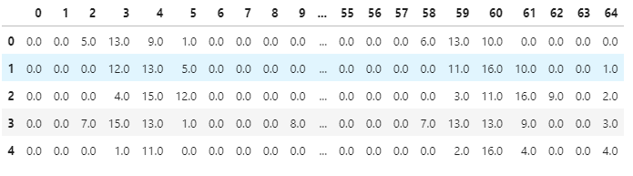
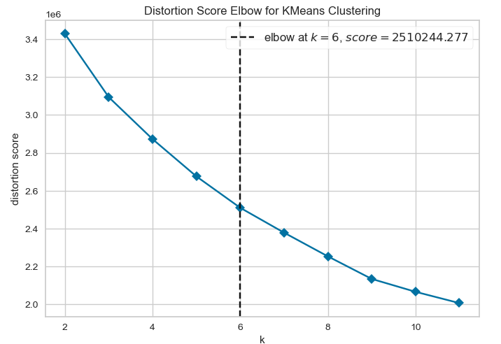

K-means clustering is a method for finding clusters and cluster centres in a set of unlabelled data.
Watch the video and follow the Python code to understand how to implement KMeans clustering using the Scikit learn package.
Intuitively, we can think of a cluster as comprising a group of data points whose distances within the cluster are small compared with the distances to points outside of the cluster.
The Scikit learn package contains an implementation for KMeans.
KMeans

Load CSV file for KMeans clustering
Download digitdata0.csv and digitData1.csv
import pandas as pd
import numpy as np
digit_zero=pd.read_csv("data/digitData0.csv",header=None)
digit_one=pd.read_csv("data/digitData1.csv",header=None)
digit_zero.shape
digit_zero.head()The output of the code is as follows:

Merge two data frames and rename the header name
Feature_set=pd.concat([digit_zero,digit_one],join="inner")
Target as a ground truth of KMean clustering
cols=["feature_"+str(i+1) for i in range(Feature_set.shape[1]-1)]
cols.append("Target")
Feature_set.columns=cols
Feature_set.head()The output of the above code:

How to define a number of clusters, K?
Elbow method
The elbow method shows the optimum k value from a range of values using distance metrics.
from sklearn.cluster import KMeans
from sklearn.datasets import make_blobs
from yellowbrick.cluster import KElbowVisualizer
X=Feature_set.iloc[:,0:-1]
y=Feature_set.iloc[:,-1]
# Instantiate the clustering model and visualizer
model = KMeans()
visualizer = KElbowVisualizer(
model, k=(2,12), metric='distortion', timings=False
) #distortion same as Euclidean distance
visualizer.fit(X) # Fit the data to the visualizer
visualizer.show() The output of the above code is as follows:

To be continue..